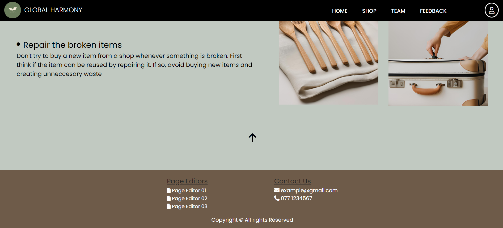
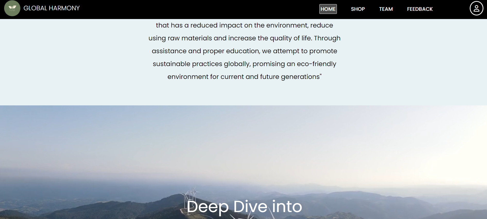
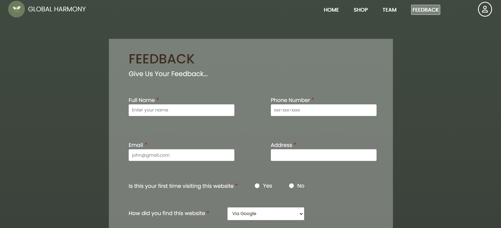
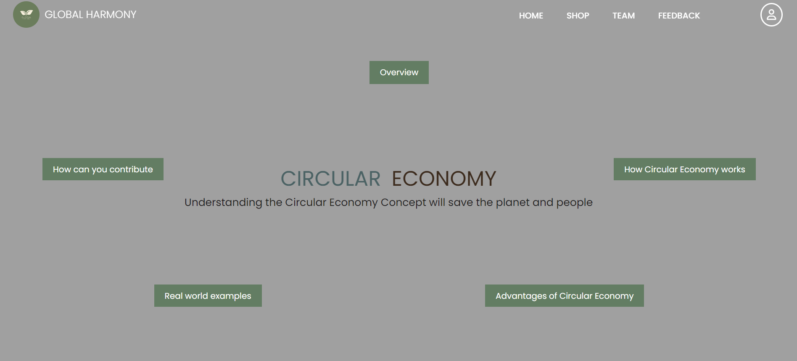

Yesmi Liyanage
Student Role 02
I was responsible for the following content of the website
WEBSITE TEMPLATE
I was responsible for creating the template for the whole website. This template mainly contains two parts. The navigation bar and the footer. Also I created an external css file apply styling to the navigation bar and the footer. After creating the template I shared the necessary html file css file and the needed javascript part with the group members

HOME PAGE
I create the home page which is considered as the main part of a website. This website's home page contains the name of the sustainable development goal which the website is based on. When scrolling down it displays the mission of the website. Then it contains a section with a background video and there is a button which will take the user to the thumbnails of three content pages. These content pages are linked to the relevent student's content page. When clicking the buttons to scroll down it gives smooth scrolling and content reveal effect with javascript
NAVIGATION BAR
My student role was responsible for creating the navigation bar. This navigation bar has no background color until it is scrolled. The backgorund colors changes into a solid color when scrolling. This navigation bars has the webites's logo and the name on it. This navigation bar helps to navigate between the home page, shop, team page, feedback form and the user profile. when hovering over these links, it shows an underlining effect and it also indicates the current page that the user is in


FEEDBACK FORM
Creation of the feedback form was a part of my student role. This feedback form contains 13 prompts. After a user fills the form and submit, the filled details will be sent to my email. To send the email, I have used emailjs. Also this form contains javascript user input validation which will ensure the user inputs valid information and fills out all the required fields
CONTENT PAGE 03
I created one of the three content pages for the website, which is "Circular Economy". This content page allows the user to explore more about the main topic of the website. This page can be visited by clicking on the circular economy section at the bottom of the home page
